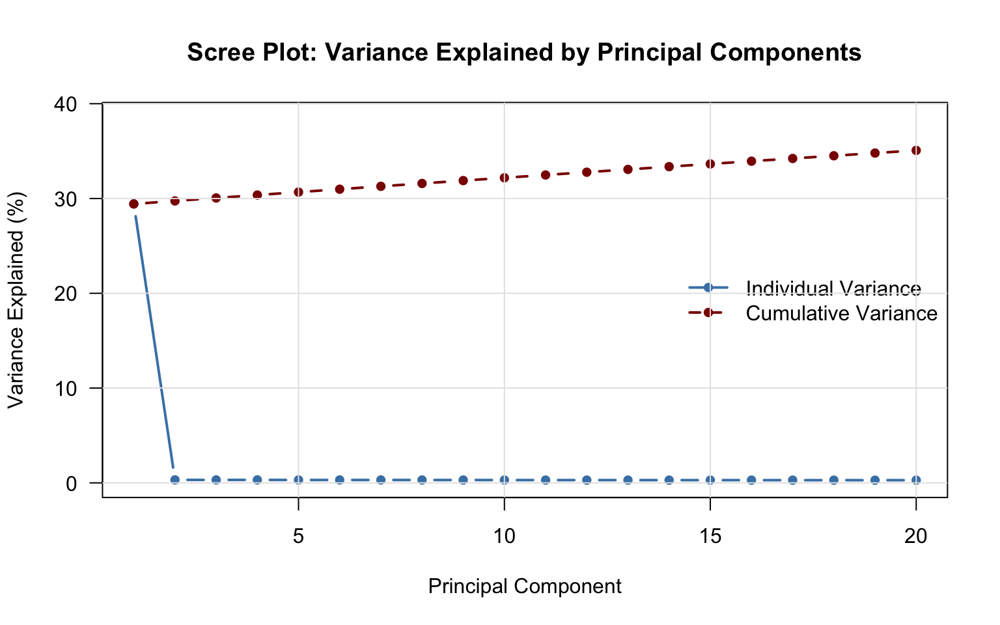
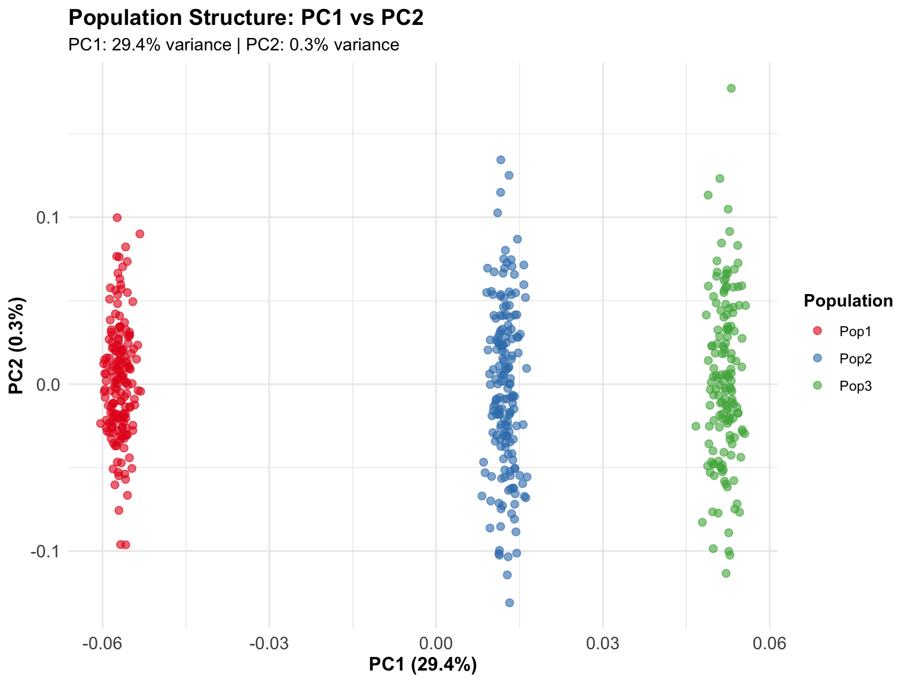

library(BigDataStatMeth)
library(rhdf5)
library(ggplot2) # For visualizationYour First Analysis
Complete Workflow from Raw Data to Results
1 Overview
This tutorial walks you through a complete analysis workflow, from importing raw genomic data through quality control, statistical analysis, and result visualization. Unlike previous tutorials that focused on individual operations, here you’ll see how everything fits together into a reproducible analysis pipeline.
Think of this as your template for real analyses. The specific dataset (simulated genomic SNPs) is less important than understanding the workflow structure: import → quality control → prepare data → analyze → validate → export. This pattern applies whether you’re analyzing genomics, climate data, or financial time series.
1.1 What You’ll Learn
By the end of this tutorial, you will:
- Execute a complete analysis from raw data to final results
- Apply quality control steps systematically (sample and feature filtering)
- Handle missing data through imputation
- Perform SVD/PCA on large matrices using block-wise algorithms
- Extract and interpret analysis results
- Create publication-quality visualizations
- Export results for downstream analyses
- Understand how to adapt this workflow to your own data
2 The Analysis Goal
We’ll analyze a simulated genomic dataset to:
- Identify population structure using PCA
- Remove technical artifacts through quality control
- Handle missing data appropriately
- Extract principal components for downstream analyses
This workflow mirrors real genomic studies but uses simulated data for tutorial purposes.
3 Prerequisites
Complete the previous tutorials:
Load required packages:
4 Step 1: Create and Import Data
4.1 Simulate Genomic Data
In real analyses, you’d load data from sequencing files. Here we simulate:
set.seed(42)
# Simulate genotype data: 500 samples × 2,000 SNPs
# (Reduced size for tutorial - real analyses use much larger datasets)
n_samples <- 500
n_snps <- 2000
# Create genotype matrix with some structure
# Simulate 3 populations with different allele frequencies
pop1 <- matrix(sample(0:2, 175*n_snps, replace = TRUE,
prob = c(0.7, 0.2, 0.1)), 175, n_snps)
pop2 <- matrix(sample(0:2, 175*n_snps, replace = TRUE,
prob = c(0.2, 0.5, 0.3)), 175, n_snps)
pop3 <- matrix(sample(0:2, 150*n_snps, replace = TRUE,
prob = c(0.1, 0.3, 0.6)), 150, n_snps)
genotype <- rbind(pop1, pop2, pop3)
# Add some missing data (realistic scenario)
missing_idx <- sample(length(genotype), length(genotype) * 0.02)
genotype[missing_idx] <- NA
# Add sample and SNP IDs
rownames(genotype) <- paste0("Sample_", 1:n_samples)
colnames(genotype) <- paste0("SNP_", 1:n_snps)
# Create population labels (for visualization later)
population <- c(rep("Pop1", 175), rep("Pop2", 175), rep("Pop3", 150))
cat("Genotype matrix created:\n")Genotype matrix created:cat(" Dimensions:", nrow(genotype), "samples ×", ncol(genotype), "SNPs\n") Dimensions: 500 samples × 2000 SNPscat(" Missing data:", round(sum(is.na(genotype))/length(genotype)*100, 2), "%\n") Missing data: 2 %
NoteAbout Dataset Size
This tutorial uses 500 samples × 2,000 SNPs for quick execution and web performance. Real genomic studies typically analyze much larger datasets:
- GWAS: 10,000-1,000,000 samples × 500,000-10,000,000 SNPs
- Whole genome: 100-10,000 samples × 3,000,000-100,000,000 variants
BigDataStatMeth handles these large-scale datasets by processing data in blocks directly from HDF5 files.
4.2 Import to HDF5
# Create HDF5 file
analysis_file <- "genomic_analysis.hdf5"
bdCreate_hdf5_matrix(
filename = analysis_file,
object = genotype,
group = "raw",
dataset = "genotypes",
overwriteFile = TRUE
)$fn
[1] "genomic_analysis.hdf5"
$ds
[1] "raw/genotypes"cat("✓ Data imported to HDF5\n")✓ Data imported to HDF5# Check file structure
h5ls(analysis_file) group name otype dclass dim
0 / raw H5I_GROUP
1 /raw .genotypes_dimnames H5I_GROUP
2 /raw/.genotypes_dimnames 1 H5I_DATASET COMPOUND 500
3 /raw/.genotypes_dimnames 2 H5I_DATASET COMPOUND 2000
4 /raw genotypes H5I_DATASET INTEGER 500 x 20005 Step 2: Quality Control
5.1 Remove Low-Quality Samples
Samples with too much missing data may indicate technical problems:
# Remove samples with >5% missing data
qc_samples <- bdRemovelowdata_hdf5(
filename = analysis_file,
group = "raw",
dataset = "genotypes",
outgroup = "qc",
outdataset = "genotypes_samples_filtered",
bycols = FALSE, # Work on rows (samples)
pcent = 0.05 # 5% threshold
)
cat("✓ Sample QC completed\n")✓ Sample QC completedcat(" Samples removed:", qc_samples$removed_count, "\n") Samples removed: 5.2 Remove Low-Quality SNPs
SNPs with low minor allele frequency (MAF) or high missingness:
# First remove SNPs with >5% missing data
qc_snps_missing <- bdRemovelowdata_hdf5(
filename = analysis_file,
group = "qc",
dataset = "genotypes_samples_filtered",
outgroup = "qc",
outdataset = "genotypes_missing_filtered",
bycols = TRUE, # Work on columns (SNPs)
pcent = 0.05
)
cat("✓ SNP missing data QC completed\n")✓ SNP missing data QC completedcat(" SNPs removed:", qc_snps_missing$removed_count, "\n") SNPs removed: # Then remove SNPs with MAF < 5%
qc_snps_maf <- bdRemoveMAF_hdf5(
filename = analysis_file,
group = "qc",
dataset = "genotypes_missing_filtered",
outgroup = "qc",
outdataset = "genotypes_qc_complete",
maf = 0.05,
bycols = TRUE,
blocksize = 1000,
overwrite = TRUE
)
cat("✓ MAF filtering completed\n")✓ MAF filtering completed
ImportantQuality Control is Critical
In real genomic analyses, QC removes:
- Technical artifacts: Failed samples, contamination
- Uninformative markers: Rare variants, high missingness
- Errors: Genotyping errors, batch effects
Always perform QC before downstream analysis. The thresholds (5% missing, 5% MAF) are typical but should be adjusted based on your study design.
5.3 Inspect QC Results
# Check dimensions after QC
h5file <- H5Fopen(analysis_file)
dim_raw <- dim(h5file$raw$genotypes)
dim_qc <- dim(h5file$qc$genotypes_qc_complete)
H5Fclose(h5file)
cat("\nDimensions before QC:", dim_raw[1], "×", dim_raw[2], "\n")
Dimensions before QC: 500 × 2000 cat("Dimensions after QC:", dim_qc[1], "×", dim_qc[2], "\n")Dimensions after QC: 500 × 2000 cat("Samples retained:", round(dim_qc[1]/dim_raw[1]*100, 1), "%\n")Samples retained: 100 %cat("SNPs retained:", round(dim_qc[2]/dim_raw[2]*100, 1), "%\n")SNPs retained: 100 %6 Step 3: Impute Missing Data
After QC, we still have some missing data. Impute using mean genotype:
# Impute missing values (mean imputation by column)
bdImputeSNPs_hdf5(
filename = analysis_file,
group = "qc",
dataset = "genotypes_qc_complete",
bycols = TRUE,
outgroup = "qc",
outdataset = "genotypes_qc_complete", # Overwrite
overwrite = TRUE
)$fn
[1] "genomic_analysis.hdf5"
$ds
[1] "qc/genotypes_qc_complete"cat("✓ Missing data imputed\n")✓ Missing data imputed
TipImputation Methods
BigDataStatMeth uses mean imputation by default. For genomic data:
- Mean imputation: Simple, fast, works for PCA/dimensionality reduction
- For association studies: Consider more sophisticated methods (BEAGLE, IMPUTE2)
- Always impute AFTER QC: Don’t impute bad data
7 Step 4: Perform SVD
Now perform SVD to extract principal components:
# Perform hierarchical SVD
svd_result <- bdSVD_hdf5(
file = analysis_file,
group = "qc",
dataset = "genotypes_qc_complete",
bcenter = TRUE, # Center the data
bscale = FALSE, # Don't scale (typical for genotypes)
k = 4, # Number of blocks
q = 1, # Number of hierarchy levels
threads = 2, # Use 2 threads
overwrite = TRUE
)
cat("✓ SVD completed\n")✓ SVD completedcat(" Results stored in:", svd_result$group, "\n") Results stored in:
NoteSVD Parameters
- bcenter = TRUE: Essential - centers data to zero mean
- bscale = FALSE: Don’t standardize (typical for genotype data)
- k: Number of blocks (more = faster but approximation)
- q: Hierarchy levels (usually 1 or 2)
- threads: Parallel processing (adjust to your system)
For huge datasets (>100 GB), increase k and consider q = 2.
8 Step 5: Extract and Examine Results
SVD produces three key outputs stored in the HDF5 file. Let’s extract them and see what they look like.
8.1 Extract Principal Components
# Open the file to access SVD results
h5file <- H5Fopen(analysis_file)
# Get singular values (eigenvalues) - these tell us variance explained
d_values <- h5file$SVD$genotypes_qc_complete$d
# Get left singular vectors (U) - sample loadings = our principal components
u_matrix <- h5file$SVD$genotypes_qc_complete$u
# Get right singular vectors (V) - SNP loadings = feature contributions
v_matrix <- h5file$SVD$genotypes_qc_complete$v
H5Fclose(h5file)
# Add meaningful column names
colnames(u_matrix) <- paste0("PC", 1:ncol(u_matrix))
colnames(v_matrix) <- paste0("PC", 1:ncol(v_matrix))
cat("✓ Extracted SVD components:\n")✓ Extracted SVD components:cat(" Singular values (d):", length(d_values), "values\n") Singular values (d): 500 valuescat(" Sample loadings (U):", nrow(u_matrix), "samples ×",
ncol(u_matrix), "components\n") Sample loadings (U): 500 samples × 500 componentscat(" SNP loadings (V):", nrow(v_matrix), "SNPs ×",
ncol(v_matrix), "components\n") SNP loadings (V): 2000 SNPs × 500 componentsLet’s look at what these matrices actually contain:
# Preview singular values
cat("\nFirst 10 singular values:\n")
First 10 singular values:print(round(d_values[1:10], 4)) [1] 443.6651 45.8525 45.7652 45.6761 45.3012 45.2635 45.1448 44.9551
[9] 44.8672 44.5770# Preview sample loadings (principal components)
cat("\nSample loadings (U matrix) - first 5 samples × first 5 PCs:\n")
Sample loadings (U matrix) - first 5 samples × first 5 PCs:print(u_matrix[1:5, 1:5]) PC1 PC2 PC3 PC4 PC5
[1,] -0.05674920 -0.0960807778 0.0008688585 -0.02656242 0.028933569
[2,] -0.05583085 0.0006901278 -0.0246730710 0.01540518 -0.012621126
[3,] -0.05799857 -0.0188249981 0.0472567892 -0.01120338 -0.045286206
[4,] -0.05701164 0.0761657948 -0.0330258052 0.07085666 0.008256376
[5,] -0.06035016 -0.0235459611 0.0327110433 -0.01996897 0.019395112# Preview SNP loadings
cat("\nSNP loadings (V matrix) - first 5 SNPs × first 5 PCs:\n")
SNP loadings (V matrix) - first 5 SNPs × first 5 PCs:print(v_matrix[1:5, 1:5]) PC1 PC2 PC3 PC4 PC5
[1,] 0.02023101 0.009783591 -0.02417201 -0.008130736 0.011707453
[2,] 0.02286006 0.005131136 -0.02201926 -0.005259815 -0.006360324
[3,] 0.02277471 0.031490093 -0.05116183 -0.002035219 -0.009526514
[4,] 0.02020268 -0.002347363 0.05582095 -0.028978655 0.032544308
[5,] 0.02327304 -0.020148580 0.02756623 0.005998072 0.042842917
NoteUnderstanding the Outputs
Singular values (d): Larger values = more important components. These decrease rapidly - the first few PCs capture most variation.
U matrix (sample loadings): Each row is a sample, each column is a PC. Values show how much each sample “loads on” that PC. This is what we plot for population structure.
V matrix (SNP loadings): Each row is a SNP, each column is a PC. Values show how much each SNP contributes to that PC. High absolute values = SNPs driving that component.
8.2 Variance Explained
Now let’s see how much variance each PC captures:
# Calculate proportion of variance explained by each PC
variance_prop <- (d_values^2) / sum(d_values^2)
# Cumulative variance (running total)
cumvar <- cumsum(variance_prop)
cat("\nVariance explained by first 10 PCs:\n")
Variance explained by first 10 PCs:cat("PC | Individual | Cumulative\n")PC | Individual | Cumulativecat("----+------------+-----------\n")----+------------+-----------for(i in 1:min(10, length(variance_prop))) {
cat(sprintf("%-3d | %6.2f%% | %6.2f%%\n",
i, variance_prop[i]*100, cumvar[i]*100))
}1 | 29.43% | 29.43%
2 | 0.31% | 29.74%
3 | 0.31% | 30.06%
4 | 0.31% | 30.37%
5 | 0.31% | 30.67%
6 | 0.31% | 30.98%
7 | 0.30% | 31.29%
8 | 0.30% | 31.59%
9 | 0.30% | 31.89%
10 | 0.30% | 32.19%cat("\n✓ First", min(10, length(variance_prop)), "PCs explain",
sprintf("%.1f%%", cumvar[min(10, length(cumvar))]*100),
"of total variance\n")
✓ First 10 PCs explain 32.2% of total variance9 Step 6: Visualize Results
9.1 Scree Plot
# Prepare vectors for plotting
n_show <- min(20, length(variance_prop))
pc_nums <- 1:n_show
var_pct <- variance_prop[1:n_show] * 100
cum_pct <- cumvar[1:n_show] * 100
# Create scree plot using vectors directly
plot(pc_nums, var_pct, type = "b", col = "steelblue", lwd = 2, pch = 16,
xlab = "Principal Component",
ylab = "Variance Explained (%)",
main = "Scree Plot: Variance Explained by Principal Components",
ylim = c(0, max(cum_pct) * 1.1),
las = 1)
# Add cumulative variance line
lines(pc_nums, cum_pct, type = "b", col = "darkred", lwd = 2,
pch = 16, lty = 2)
# Add legend
legend("right",
legend = c("Individual Variance", "Cumulative Variance"),
col = c("steelblue", "darkred"),
lty = c(1, 2),
lwd = 2,
pch = 16,
bty = "n")
# Add grid
grid(col = "gray90", lty = 1)
9.2 PCA Plot
# Create data frame for plotting
# Match with population labels (accounting for QC filtering)
# We'll use first dim_qc[1] samples
pca_data <- data.frame(
PC1 = u_matrix[,1],
PC2 = u_matrix[,2],
PC3 = u_matrix[,3],
Population = population[1:nrow(u_matrix)]
)
# Plot PC1 vs PC2
ggplot(pca_data, aes(x = PC1, y = PC2, color = Population)) +
geom_point(alpha = 0.6, size = 2) +
scale_color_manual(values = c("Pop1" = "#E41A1C",
"Pop2" = "#377EB8",
"Pop3" = "#4DAF4A")) +
labs(
title = "Population Structure: PC1 vs PC2",
subtitle = sprintf("PC1: %.1f%% variance | PC2: %.1f%% variance",
variance_prop[1]*100, variance_prop[2]*100),
x = sprintf("PC1 (%.1f%%)", variance_prop[1]*100),
y = sprintf("PC2 (%.1f%%)", variance_prop[2]*100)
) +
theme_minimal() +
theme(
plot.title = element_text(face = "bold", size = 14),
legend.position = "right",
legend.title = element_text(face = "bold"),
axis.text = element_text(size = 11),
axis.title = element_text(size = 12, face = "bold")
)
TipInterpreting PCA Plots
In this simulated example, the three populations separate clearly on PC1 and PC2, which is expected since we simulated them with different allele frequencies.
In real data: - PC1/PC2 separation: Often reflects continental ancestry - Outliers: May indicate sample mix-ups or technical issues - Gradients: Reflect admixture or geographic structure - Clusters: Can represent discrete populations or family structure
10 Step 7: Save Results for Downstream Use
10.1 Export PCs for Other Tools
# Save PCs to text file for use in other software
pcs_export <- data.frame(
SampleID = paste0("Sample_", 1:nrow(u_matrix)),
u_matrix[, 1:10] # First 10 PCs
)
write.table(pcs_export, "principal_components.txt",
row.names = FALSE, quote = FALSE, sep = "\t")
cat("✓ Principal components exported to principal_components.txt\n")✓ Principal components exported to principal_components.txt10.2 Document the Analysis
Every analysis should be documented. Let’s create a summary report with all key information:
# Create comprehensive analysis summary
analysis_summary <- sprintf("
Genomic Analysis Summary
========================
Date: %s
Input Data:
- Samples: %d
- SNPs: %d
- Missing data: %.2f%%
Quality Control:
- Samples after QC: %d (%.1f%% retained)
- SNPs after QC: %d (%.1f%% retained)
- MAF threshold: 5%%
- Missing data threshold: 5%%
SVD Parameters:
- Centered: Yes
- Scaled: No
- Blocks (k): 4
- Levels (q): 1
- Components computed: %d
Variance Explained:
- PC1: %.2f%%
- PC2: %.2f%%
- PC1-10 cumulative: %.2f%%
Output Files:
- HDF5 file: %s
- PCs export: principal_components.txt
- This summary: analysis_summary.txt
",
Sys.Date(),
dim_raw[1], dim_raw[2],
sum(is.na(genotype))/length(genotype)*100,
dim_qc[1], dim_qc[1]/dim_raw[1]*100,
dim_qc[2], dim_qc[2]/dim_raw[2]*100,
length(d_values),
variance_prop[1]*100, variance_prop[2]*100, cumvar[10]*100,
analysis_file
)
# Save to file
writeLines(analysis_summary, "analysis_summary.txt")
cat("✓ Analysis summary saved to analysis_summary.txt\n\n")✓ Analysis summary saved to analysis_summary.txtcat("Here's what was saved:\n")Here's what was saved:cat(strrep("=", 70), "\n")====================================================================== cat(analysis_summary)
Genomic Analysis Summary
========================
Date: 2025-12-15
Input Data:
- Samples: 500
- SNPs: 2000
- Missing data: 2.00%
Quality Control:
- Samples after QC: 500 (100.0% retained)
- SNPs after QC: 2000 (100.0% retained)
- MAF threshold: 5%
- Missing data threshold: 5%
SVD Parameters:
- Centered: Yes
- Scaled: No
- Blocks (k): 4
- Levels (q): 1
- Components computed: 500
Variance Explained:
- PC1: 29.43%
- PC2: 0.31%
- PC1-10 cumulative: 32.19%
Output Files:
- HDF5 file: genomic_analysis.hdf5
- PCs export: principal_components.txt
- This summary: analysis_summary.txtcat(strrep("=", 70), "\n")======================================================================
TipGood Documentation Practices
Always document: - Input data characteristics (size, missing data) - QC thresholds and results - Analysis parameters - Output locations - Date performed
Why this matters: - Reproducibility - you or others can recreate the analysis - Transparency - methods are clear - Debugging - if something’s wrong, you know what was done - Publications - you have all the details for methods sections
This summary file is perfect for README files or supplementary materials.
11 Interactive Exercise
11.1 Practice: Modifying the Analysis Workflow
Understanding a workflow means being able to modify it for different scenarios. This exercise challenges you to adapt what you’ve learned to new situations.
# Exercise: Adapt this workflow for your research
# Scenario 1: Different QC thresholds
# Your dataset has higher missingness - adjust thresholds
bdRemovelowdata_hdf5(
filename = "genomic_data.hdf5",
group = "raw", dataset = "genotypes",
outgroup = "qc", outdataset = "samples_qc",
bycols = FALSE,
pcent = 0.10 # Allow 10% missing instead of 5%
)
# Scenario 2: More stringent MAF filtering
bdRemoveMAF_hdf5(
filename = "genomic_data.hdf5",
group = "qc", dataset = "snps_qc",
outgroup = "qc", outdataset = "snps_qc_maf",
maf = 0.10 # Remove variants <10% frequency
)
# Scenario 3: Different SVD parameters
# You want more PCs but with less accuracy for speed
bdSVD_hdf5(
filename = "genomic_data.hdf5",
group = "qc", dataset = "imputed",
k = 10, # More PCs
q = 1, # Fewer hierarchy levels (faster)
bcenter = TRUE,
bscale = FALSE
)
# Scenario 4: Add your own visualization
# What would you plot differently?
# - Top 3 PCs in 3D?
# - Loadings to identify influential SNPs?
# - Correlation of PCs with phenotypes?
TipReflection Questions
Think about how you’d adapt this workflow to your specific needs:
1. Quality Control Decisions: - What QC thresholds are appropriate for your data? - Do you need additional filters (Hardy-Weinberg equilibrium, relatedness)? - How do you decide what’s “low quality” vs. “real signal”? - When should you be more vs. less stringent?
2. Missing Data Strategy: - Mean imputation is simple but crude - when is it acceptable? - What alternatives exist (mode, k-NN, matrix completion)? - How much missingness is too much to impute validly? - Should you remove high-missingness markers before imputing?
3. SVD Parameters: - How many principal components do you need? - Trade-off: k=10 with q=2 vs. k=40 with q=1? - When does increased accuracy justify increased computation time? - How do you verify results are accurate enough?
4. Validation Steps: - How do you know your QC worked correctly? - What checks confirm SVD completed properly? - How do you detect if you removed too much/little data? - When should you see red flags in the results?
5. Scaling to Your Data: - This tutorial used 500 samples × 2,000 SNPs - What if you have 50,000 samples × 500,000 SNPs? - Which steps become bottlenecks? - Where would you adjust block sizes, threads, or parameters?
6. Workflow Modifications: - What if you’re analyzing transcriptomics instead of genomics? - Different data types (time series, images, sensor networks)? - How would you adapt each step? - Which parts are generalizable, which are domain-specific?
The best way to learn is by trying. Copy this workflow, modify it step by step, see what breaks and what works. Understanding why something fails teaches as much as getting it right.
12 Cleanup
# Close HDF5 connections
h5closeAll()
# Keep the HDF5 file and results for review
# Remove intermediate exports if desired:
# file.remove("principal_components.txt", "analysis_summary.txt")
cat("✓ Analysis complete!\n")✓ Analysis complete!13 What You’ve Learned
✅ Complete workflow: From raw data to interpretable results
✅ Quality control: Sample and SNP filtering
✅ Data preparation: Missing data imputation
✅ SVD analysis: Dimensionality reduction on large matrices
✅ Visualization: Scree plots and PCA plots
✅ Results export: Preparing data for downstream analyses
14 Next Steps
Explore advanced workflows:
- Implementing PCA - Real genomic data, advanced visualization
- Implementing CCA - Multi-omics integration
- Cross-Platform Workflows - Using results in Python, C++
Optimize for your data:
- Adjust QC thresholds based on your study
- Try different SVD parameters (k, q) for speed vs accuracy
- Use more PCs if data has complex structure
- Integrate covariates in downstream analyses
Learn the theory:
- Block-Wise Computing - How SVD scales to large data
- Linear Algebra Refresher - Math behind PCA/SVD
15 Key Takeaways
Let’s consolidate what you’ve learned about executing complete analyses with BigDataStatMeth, from raw data through final results.
15.1 Essential Concepts
Analysis workflows follow a consistent structure regardless of domain or data type. Import → quality control → data preparation → analysis → validation → export. This pattern applies whether you’re analyzing genomics, climate data, financial time series, or sensor networks. The specific QC steps and analysis methods change, but the overall structure remains constant. Understanding this framework helps you design new analyses systematically rather than ad hoc, and recognize where different projects share common challenges.
Quality control must come before analysis, not after. Running PCA on data with 30% missing values, duplicate samples, or technical artifacts produces misleading results that look mathematically valid but are scientifically meaningless. You can’t fix bad input with good algorithms - garbage in, garbage out applies universally. Investing time in QC upfront determines whether your results are interpretable or garbage. The temptation to skip QC and “just see what happens” is strong, but resist it. QC failures discovered after weeks of analysis waste far more time than doing QC correctly from the start.
Missing data imputation has consequences that affect downstream analyses. Mean imputation (replacing missing values with column means) is computationally simple but statistically crude - it reduces variance artificially and can create patterns where none exist. It’s acceptable for low missingness (<5%) where impact is minimal. Higher missingness requires more sophisticated methods (k-NN imputation, matrix completion) or removal of high-missingness features entirely. There’s no free lunch: every imputation method introduces assumptions, and those assumptions propagate through your analyses affecting final conclusions.
Centering versus scaling matters for interpretation and affects what your principal components mean. Centering (subtracting column means) is almost always needed for PCA - it ensures PC1 doesn’t just capture mean differences between features. Scaling (dividing by standard deviations) is more controversial: it gives equal weight to all features, which helps when features have different units (mixing expression and metabolites) but can obscure real biological differences in variability. For genomic SNPs where all features are the same type, we typically center but don’t scale. Understanding these choices helps you interpret what patterns the PCs are actually capturing.
Variance explained tells you if PCA succeeded. If PC1-PC10 only explain 20% of total variance, your data either has very high true dimensionality (many independent biological signals) or very high noise (low signal-to-noise ratio). If PC1 alone explains 80%, you have a strong dominant pattern - but verify it’s real biological structure, not a technical artifact like batch effects or ancestry. Inspecting variance explained is your first diagnostic of whether the analysis produced meaningful results or just decomposed noise.
Block-wise processing is transparent to the user, hiding complexity while enabling scalability. You called bdSVD_hdf5() exactly as you would any function - one function call, simple arguments. Behind the scenes, BigDataStatMeth partitioned your matrix into blocks, computed local SVDs, hierarchically merged results, and produced final output. This happened automatically without you writing partitioning logic or managing intermediate results. This abstraction is the package’s core value: sophisticated algorithms exposed through simple interfaces.
Documentation is part of the analysis, not an afterthought. The analysis summary you created documents everything needed to reproduce the work: data sources, QC thresholds, parameters, software versions, dates. Without this documentation, you’ll forget critical details within weeks. Future you (revisiting the analysis), collaborators (extending the work), and reviewers (verifying methods) all depend on thorough documentation. Make documentation a habit from the start, not something you do “if you have time” before submitting papers.
15.2 When to Apply This Workflow
Understanding which analyses benefit from this structured approach versus when simpler methods suffice helps you work efficiently.
✅ Use this complete workflow when:
Your dataset exceeds memory limits - When traditional
prcomp()orsvd()fail with memory errors, BigDataStatMeth’s disk-based approach becomes necessary, not optional. The workflow structure (HDF5 storage, QC, analysis, export) handles data that doesn’t fit in RAM.Quality control is critical for validity - Genomic studies, clinical trials, sensor networks - anywhere that data quality directly affects scientific conclusions. Following QC → imputation → analysis prevents analyzing garbage and drawing false conclusions.
You’ll run multiple analyses on the same data - Converting to HDF5 and performing QC once pays off when you subsequently run PCA, regression, association tests, and more. The upfront investment amortizes across all downstream analyses.
Reproducibility and documentation matter - Academic research, regulatory submissions, collaborative projects - anywhere others need to understand and verify your methods. The structured workflow with documented parameters makes reproducibility natural rather than an afterthought.
The analysis will be extended or repeated - If you’ll add more samples later, rerun with updated QC thresholds, or apply the same pipeline to new datasets, having a documented workflow saves enormous time. Copy the structure, adjust parameters, execute.
✅ Adapt the workflow when:
Analyzing different data types - Transcriptomics needs log-transformation and batch correction instead of MAF filtering. Time series needs detrending instead of missing data imputation. Climate data needs spatial autocorrelation handling. The workflow structure (import → QC → prepare → analyze) remains constant, but specific operations change.
QC requirements differ - Exploratory analyses tolerate higher missingness than GWAS. Population structure studies need less stringent filtering than association tests. Adjust QC thresholds to match your analysis goals and acceptable false discovery rates.
Computational resources vary - With 256 GB RAM, you might skip HDF5 for 40 GB datasets. With 16 GB RAM, you need disk-based computing for 10 GB datasets. Adjust block sizes (
k), hierarchy levels (q), and threading based on your available resources.
❌ Simpler approaches suffice when:
Data fits comfortably in memory - If
data <- read.csv(file); svd(data)works without issues, the added complexity of HDF5 storage and block-wise processing provides minimal benefit. Use familiar tools that work.One-off exploratory analysis - Quick investigations you won’t repeat or extend don’t justify elaborate workflows. Load data, run analysis, save key results, move on. Don’t over-engineer temporary explorations.
No quality control needed - Clean, well-curated datasets (like published benchmark data) don’t need extensive QC. Applying QC steps that aren’t necessary wastes time without improving results.
The key insight is matching workflow complexity to problem complexity. Large-scale, quality-sensitive, repeated analyses justify this structured approach. Small-scale, one-off, exploratory work doesn’t. Choose appropriately based on your specific situation rather than applying the same workflow everywhere.